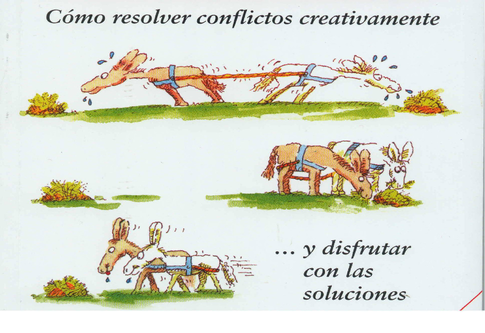

RESOLUCIÓN DE CONFLICTOS
“No hay caminos para la paz, la paz es el camino” Mahatma Ghandy
¿Qué palabras vienen a tu cabeza, sin pensar demasiado, a propósito de la palabra que figura en el recuadro?
En la mayoría de los casos, las ideas que se nos ocurren tienen una connotación negativa, por la percepción generalizada acerca de la negatividad del conflicto. Sin embargo, actualmente se insiste en que el conflicto no es necesariamente malo; el conflicto puede aportar elementos positivos como cambio, desarrollo, creación…
Hemos de entender los conflictos como algo natural, que forman parte de la vida, de las relaciones interpersonales y de todas las organizaciones. Es imposible pensar en un grupo que no tenga conflictos, en el que nunca entren en desacuerdo las personas que lo forman. No podemos evitarlos permanentemente, así pues hemos de fijar nuestra atención, no en la existencia de los conflictos, sino en la forma de resolverlos. Hemos de aprender a gestionarlos y resolverlos de manera adecuada.

Póster de 1937 publicado por el movimiento americano contra la guerra para simbolizar la resolución de conflictos en el que todos ganamos algo.